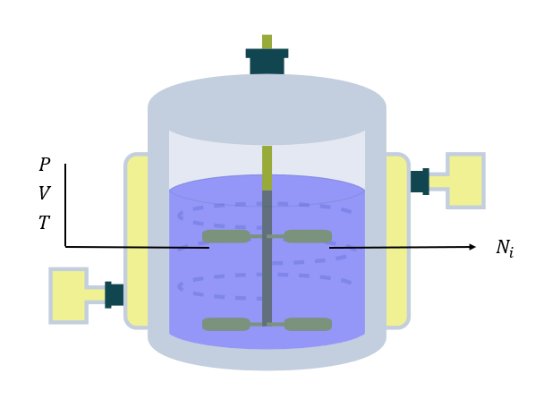
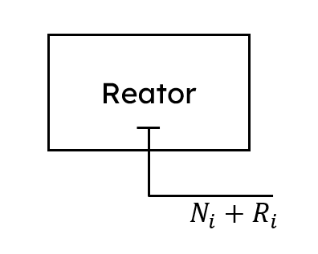
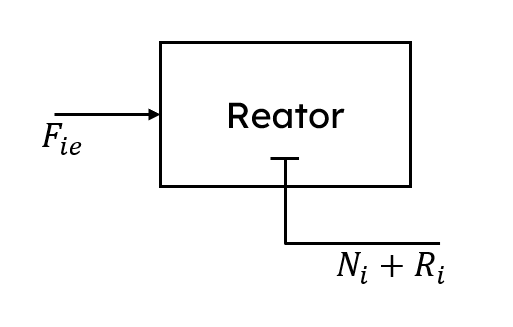

\(\require{cancel}\)
Para completar nosso estudo a respeito dos reatores de mistura, vamos entender como funciona o Reator Batelada ou BSTR (Batch Stirred Tank Reactor)!
Esse tipo de reator é comumente utilizado na indústria química para produzir diversos tipos de produtos, como sabões, fármacos, cosméticos, entre outros.
Em geral, os reatores em batelada são fundamentais na indústria química, especialmente para reações com tempos de reação longos, produtos de alto valor, ou quando a flexibilidade na produção é necessária.
Esse tipo de reator é comumente utilizado na indústria química para produzir diversos tipos de produtos, como sabões, fármacos, cosméticos, entre outros.
Em geral, os reatores em batelada são fundamentais na indústria química, especialmente para reações com tempos de reação longos, produtos de alto valor, ou quando a flexibilidade na produção é necessária.
O que de fato é um Reator Batelada?
Como já possuímos um conhecimento sólido a respeito do CSTR, fica muito simples entender o BSTR.
O BSTR nada mais é que um CSTR que não possui nenhuma entrada ou saída de massa.
O que significa que todos os reagentes são adicionados no início da reação, e depois de um tempo de espera, a mistura entre produtos e reagentes é totalmente retirada de dentro do reator.
Veja a comparação de um CSTR para um BSTR:
O BSTR nada mais é que um CSTR que não possui nenhuma entrada ou saída de massa.
O que significa que todos os reagentes são adicionados no início da reação, e depois de um tempo de espera, a mistura entre produtos e reagentes é totalmente retirada de dentro do reator.
Veja a comparação de um CSTR para um BSTR:
Modelando o BSTR
Vamos assumir o seguinte Reator Batelada:

Características:
-
Nele ocorre uma reação química qualquer
-
Isotérmico
-
Mistura perfeita
-
Vamos analisar uma espécie \(i\) qualquer
Como vimos na nossa revisão de balanço de massa e na aula de modelagem para o CSTR, o balanço de massa para uma espécie \(i\) para um CSTR completo é:

\[\frac{dN_{i}}{dt} = F_{ie} - F_{is} + R_{i}\]
Nosso Reator Batelada segue a mesma modelagem, entretanto, sem saídas ou entradas:

\[\frac{dN_{i}}{dt} = \cancel{F_{ie}} - \cancel{F_{is}} + R_{i}\]
Portanto:
\[\frac{dN_{i}}{dt} = R_{i}\]
Em que:
-
\(N_{i} \to\) Número de mols de A dentro do reator
-
\(R_{i} \to\) Número de mols de A produzidos ou consumidos pelas reações dentro do reator (explorado na revisão de cinética química)
Perceba então, que o modelo do Reator Batelada nada mais é que uma simplificação do modelo do reator CSTR!
A Batelada Alimentada
Os reatores em batelada possuem uma variação interessante, a Batelada Alimentada.
Que consiste basicamente em alimentar o reator com reagentes ao longo da reação, mas sem nenhuma corrente de saída, veja:
Que consiste basicamente em alimentar o reator com reagentes ao longo da reação, mas sem nenhuma corrente de saída, veja:
Por que é interessante?
-
Permite melhor controle sobre a concentração dos reagentes.
-
Usado para reações sensíveis à concentração ou para evitar condições extremas.
Modelando a Batelada Alimentada
A modelagem dos reatores em Batelada Alimentada segue exatamente o mesmo princípio do reator Batelada, entretando, com correntes de entrada:

Portanto:
\[\frac{dN_{i}}{dt} = F_{ie} + R_{i}\]
A esse ponto, você já deve ter notado, todos os modelos que desenvolvemos são praticamente iguais!
E é exatamente isso; todos os modelos para reator de mistura são pequenas variações do modelo completo do CSTR.
Isso é tudo que precisamos. Na próxima aula, investigaremos exemplos simulados do reator em batelada exatamente da mesma forma como fizemos para o CSTR!
E é exatamente isso; todos os modelos para reator de mistura são pequenas variações do modelo completo do CSTR.
Isso é tudo que precisamos. Na próxima aula, investigaremos exemplos simulados do reator em batelada exatamente da mesma forma como fizemos para o CSTR!